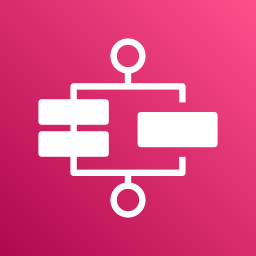
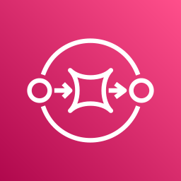

Лекція 20: потоки даних і Step Functions
Середній рівень: усі правила з повної лекції, але простими словами й без розповіді про наш проєкт. Повна: ../20-streaming-step-functions.md. Факти, які в повній лекції «з пам'яті», тут із позначкою (не звірено). Exam Guide не вимагає будувати ETL, лише розуміти, що обрати.
Головна ідея
Kinesis це річка, з якої п'ють багато хто і яка пам'ятає останні години чи дні. SQS це черга в касу: купив і пішов. Firehose це труба в басейн. Step Functions веде багатокроковий процес як машину станів.
Навички: 1.1.1, 1.1.3, 1.1.6 (потоки), 1.1.8.
Навіщо це так задумано
Потік (Kinesis) для даних, що надходять постійно й які треба читати кільком програмам чи перечитувати. Step Functions для процесів із багатьма кроками, щоб повтори й помилки були описані, а не розкидані по коду.
Крок 1. Словник
| Термін | Суть |
|---|---|
| Kinesis Data Streams | потік записів у реальному часі, як Kafka |
| Amazon Data Firehose | доставка потоку в сховище без коду |
| Step Functions | оркестратор: процес як машина станів |
| Athena | SQL-запити по файлах у S3 |
| shard | одиниця потужності Kinesis (як партиція Kafka) |
| partition key | визначає шард, дає порядок |
| sequence number | номер запису в шарді |
| enhanced fan-out | окремий канал читання |
| ASL | Amazon States Language (JSON-опис станів) |
| saga | ланцюг кроків із компенсаціями |
Крок 2. Що обрати: головна таблиця
| SQS | SNS | EventBridge | Kinesis | |
|---|---|---|---|---|
| Модель | черга | pub/sub | шина подій | потік |
| Хто читає | один споживач на повідомлення | усі підписники | правила | багато незалежних читачів |
| Зберігання | до 14 днів, до видалення | ні | архів (опція) | 24 год - 365 днів, повторне читання |
| Порядок | FIFO | FIFO | немає | у межах шарда |
| Типово | розвантажити сервіс | сповістити всіх | маршрутизувати події | телеметрія, логи |
Правило: повторне читання, порядок, кілька споживачів, багато даних означає Kinesis. Це ще й про зв'язність (навичка 1.1.1): чим менше сервіси знають один про одного, тим слабша зв'язність.
Крок 3. Kinesis Data Streams
| Параметр | Значення |
|---|---|
| Запис на шард | 1 МБ/с або 1000 записів/с |
| Читання на шард | 2 МБ/с |
| Розмір запису | до 10 МіБ |
| Зберігання | 24 год, 7 днів, до 365 днів |
| On-demand | автомасштабування, старт 4 МБ/с, до 200 МБ/с |
| Provisioned | задаєте шарди, оплата за шард-годину |
- Порядок: записи з однаковим partition key йдуть в один шард і лишаються в порядку. Поганий ключ дає hot shard, як у DynamoDB. Між шардами порядку нема.
- Помилка
ProvisionedThroughputExceededException: повторити з backoff, додати шарди.SplitShardзбільшує,MergeShardsзменшує. - Enhanced fan-out: кожен споживач отримує свої 2 МБ/с на шард через
SubscribeToShard, а не ділить спільні.
Порівняння з Kafka:
| Kafka | Kinesis |
|---|---|
| topic | stream |
| partition | shard |
| key | partition key |
| offset | sequence number |
| consumer group | consumer / KCL application |
Lambda читає Kinesis через event source mapping: пачками, по шарду. Параметри: BatchSize, BisectBatchOnFunctionError (поділ пачки навпіл), MaximumRetryAttempts, OnFailure destination. Без них одна «отруєна» запис блокує шард, поки не мине retention.
KCL (Kinesis Client Library) керує шардами й чекпойнтами в DynamoDB. Один застосунок KCL має власну таблицю в DynamoDB (оренди шардів і чекпойнти), її ділити з іншим не можна, і вона оплачується окремо.
Крок 4. Data Firehose
Доставка без коду: приймає дані, буферизує, кладе в S3, Redshift, OpenSearch, Snowflake, Splunk, HTTP та інші.
- буфер: розмір 1-128 МБ для S3 або інтервал 0-900 с, що настане раніше;
- Lambda-трансформація: кожен запис повертається з
recordId,result(Ok,Dropped,ProcessingFailed) іdataу base64; - перетворення в Parquet, стиснення, динамічні партиції;
- джерелом може бути Kinesis Data Streams.
| Kinesis Data Streams | Data Firehose | |
|---|---|---|
| Час | реальний | майже реальний, через буфер |
| Споживачі | свої | пункт призначення |
| Зберігання, повторне читання | так | ні |
| Керування | шарди або on-demand | не потрібне |
Правило: «зберегти потік у S3 без коду» означає Firehose.
Athena (SQL по S3 без серверів) і OpenSearch (повнотекстовий пошук і дашборди логів, навичка 1.3.2): лекція 29.
Крок 5. Step Functions
Оркестрація чи хореографія:
| Хореографія (EventBridge, SNS) | Оркестрація (Step Functions) | |
|---|---|---|
| Хто керує | ніхто: сервіси реагують | один процес знає весь шлях |
| Видимість | розкидана | графічна історія кожного запуску |
| Коли | слабка зв'язність | складні кроки, повтори, ручні кроки |
Опис це JSON Amazon States Language: StartAt, States, у кожного стану Type, Resource, Next чи End. Стан Task може викликати Lambda (arn:aws:states:::lambda:invoke), SNS (...:sns:publish) та інші. Retry задає повтори (ErrorEquals, MaxAttempts, BackoffRate), Catch перехоплює помилки (States.ALL) і веде в інший стан.
Типи станів (їх вісім): Task, Choice, Parallel, Map, Wait, Pass, Succeed, Fail.
Retry і Catch роблять стійкість декларативною (повтори з backoff, навичка 1.1.3) замість коду в кожній функції.
| Standard | Express | |
|---|---|---|
| Тривалість | до 1 року | до 5 хв |
| Виконання | exactly-once | at-least-once (асинхронний), at-most-once (синхронний) |
| Використання | довгі процеси | багато коротких подій |
| Історія | у консолі | у CloudWatch Logs |
Документація: Standard ідемпотентні, Express дешевші й швидші, але не ідемпотентні.
Callback: .waitForTaskToken чекає зовнішню подію: людське підтвердження, ручний крок.
Lambda Durable Functions нова можливість: довгі процеси з контрольними точками прямо в Lambda, до року (на іспит навряд чи потрапить).
Оркестрація кількох Lambda: Step Functions, а не виклик Lambda з Lambda (платите за очікування).
Крок 6. Стійкість: загальні прийоми (навичка 1.1.3)
- Retry з exponential backoff і jitter: кожна пауза довша, з випадковістю, щоб клієнти не били водночас;
- Circuit breaker: припинити виклики зламаного сервісу;
- Graceful degradation: AI-опис недоступний, показати фото без нього;
- DLQ / destinations: куди падає нездійсненне;
- Idempotency.
SDK AWS має вбудовані повтори й режими standard, adaptive і legacy (AWS радить standard; adaptive додає клієнтське обмеження швидкості й може затримувати навіть перший запит).
Крок 7. Доповнення: режими Kinesis, Firehose, Flink, Step Functions докладніше
Додано з чужих конспектів іспиту й звірено з документацією AWS (2026-11-11). Що не звірено, позначено (не звірено). В AWS це не виконувалось.
Kinesis Data Streams: що додати
- Retention до 365 днів, replay є, видалити дані не можна, доки не спливуть.
- Порядок для записів з однаковим partition key.
- Запис: у чужому конспекті «1 МБ», за документацією 10 МіБ.
- KPL допомагає писати продюсера, KCL споживача. Kinesis Agent шле логи й файли.
Provisioned чи on-demand:
| Provisioned | On-demand | |
|---|---|---|
| Хто планує | ви обираєте шарди | нічого планувати не треба |
| Запис на шард | 1 МБ/с (або 1000 записів/с) | сервіс керує сам |
| Читання на шард | 2 МБ/с | зростає разом із записом |
| Масштаб | вручну | сам, до подвійного піка за 30 днів |
| Оплата | за шард на годину | за потік на годину й за ГБ |
Рецепт «скільки шардів» (provisioned, 3 кроки).
- Запис у КіБ/с ділите на 1024.
- Читання у КіБ/с ділите на 2048.
- Беремо більше з двох і округлюємо вгору.
Приклад: пишемо 3000 КіБ/с, три споживачі читають по 3000, разом 9000 КіБ/с. 3000/1024 ≈ 2,93; 9000/2048 ≈ 4,39. Більше 4,39, округлюємо вгору: 5 шардів.
Режим потоку можна перемикати двічі на добу. Якщо навантаження виросте більш ніж удвічі за 15 хв, можливий throttling, запит треба повторити.
Data Firehose
- Раніше «Kinesis Data Firehose». Повністю керований, сам масштабується, платите за використане. Запис до 1000 КБ.
- Доставляє в S3, Redshift, OpenSearch, Splunk, MongoDB, Datadog, New Relic, власний HTTP endpoint.
- Майже реальний час: буфер за розміром чи часом.
- Lambda може перетворити дані (наприклад CSV у JSON). Усі чи невдалі дані можна класти в S3 backup bucket.
- Сценарії: аналітика кліків, аналіз логів, IoT, BI у сховищах даних.
| Kinesis Data Streams | Data Firehose | |
|---|---|---|
| Код | свій продюсер і споживач | коду нема |
| Час | реальний | майже реальний |
| Потужність | provisioned чи on-demand | авто |
| Зберігання | до 365 днів | не зберігає |
| Replay | є | нема |
Managed Service for Apache Flink
- Раніше «Kinesis Data Analytics for Apache Flink».
- Flink це фреймворк обробки потоків. Мови: Java, Scala, Python, SQL (чужий конспект пропустив Python).
- Сервіс виділяє ресурси, паралелить, сам масштабується, робить резервні копії (checkpoints і snapshots).
- Flink не читає з Firehose (не звірено).
Step Functions докладніше
- Один процес це одна state machine у JSON, з графічною історією. Запускати можна з SDK, API Gateway, EventBridge.
Taskможе: викликати Lambda, запустити Batch job, запустити ECS task і дочекатися, записати в DynamoDB, опублікувати в SNS чи SQS, запустити інший workflow, віддати роботу Activity (EC2, ECS, свій сервер).
| Стан | Що робить |
|---|---|
| Choice | перевіряє умову й веде у гілку |
| Succeed, Fail | завершує успіхом чи помилкою |
| Pass | передає вхід на вихід, роботи не робить |
| Wait | чекає час або до дати |
| Map | у циклі по масиву |
| Parallel | паралельні гілки |
Помилки. Три джерела: помилка в описі (у Choice не збігся жоден варіант), збій завдання, тимчасові проблеми (мережа). Лікуйте їх у state machine через Retry і Catch, не в коді.
| Код | Значення |
|---|---|
States.ALL |
будь-яка помилка |
States.Timeout |
завдання довше за TimeoutSeconds або немає heartbeat |
States.TaskFailed |
збій виконання |
States.Permissions |
не вистачає прав |
Retry: правила зверху вниз. ErrorEquals (яку помилку), IntervalSeconds (перша пауза), BackoffRate (у скільки разів росте пауза), MaxAttempts (типово 3, 0 без повторів). Коли спроби скінчились, вмикається Catch.
Рецепт Retry з прикладом (3 кроки). IntervalSeconds = 1, BackoffRate = 2.0, MaxAttempts = 3.
- Перша пауза 1 с.
- Кожна наступна вдвічі довша: 2 с.
- Далі 4 с. Усього три повтори.
Catch: також зверху вниз. Next це стан, куди перейти, ResultPath вирішує, що піде на вхід цьому стану. З "ResultPath": "$.error" початкові дані лишаються і до них дописується помилка. Без нього на вхід прийшла б лише помилка.
Callback .waitForTaskToken: додаєте його в кінець Resource. Крок зупиняється, поки хтось не повідомить SendTaskSuccess чи SendTaskFailure з Task Token. Підходить для людського схвалення, сторонніх систем, старих систем. Токен можна покласти в повідомлення SQS, а воркер (Lambda, ECS, сторонній сервіс) бере повідомлення й повертає результат разом з токеном.
Activity Tasks: воркер (EC2, Lambda, мобільний пристрій) сам питає завдання викликом GetActivityTask, потім SendTaskSuccess чи SendTaskFailure. Щоб крок не закрився: TimeoutSeconds і heartbeat; так можна чекати до 1 року.
Standard чи Express:
| Standard | Express | |
|---|---|---|
| Тривалість | до 1 року | до 5 хв |
| Виконання | exactly-once | async: at-least-once; sync: at-most-once |
| Історія | до 90 днів або CloudWatch | CloudWatch Logs |
| Оплата | за state transitions | за виконання, тривалість, пам'ять |
.waitForTaskToken і Activities |
є | нема |
| Для чого | не ідемпотентні дії (платежі) | IoT, потоки, мобільні бекенди |
- Async Express не чекає завершення, результат шукати в CloudWatch Logs, потрібна ідемпотентність (повідомлення).
- Sync Express чекає й повертає відповідь, годиться для оркестрації мікросервісів, викликається з API Gateway чи Lambda.
- Тип workflow після створення змінити не можна.
Словник
| Термін | Що це |
|---|---|
| Shard | одиниця потужності Kinesis Data Streams |
| Kinesis Data Streams | потік подій, який можна читати повторно |
| Data Firehose | доставка потоку в S3, Redshift, OpenSearch без коду |
| Enhanced fan-out | окремий канал читання для кожного споживача |
| State machine | опис кроків у Step Functions мовою ASL |
| Standard / Express | довгі робочі процеси чи короткі й масові |
| Retry / Catch | повтор і обробка помилки на кроці |
| Idempotency | повторна обробка не змінює результат |
🖼 Схема: Kinesis Data Streams: потік і shards
| Параметр | Значення |
|---|---|
| Запис на shard | 1 МБ/с або 1000 записів/с |
| Читання на shard | 2 МБ/с |
| Розмір запису | до 10 МіБ |
| Зберігання | 24 год, 7 днів, до 365 днів |
| On-demand | авто, старт 4 МБ/с, до 200 МБ/с |
🖼 Схема: Data Firehose і порівняння зі Streams
- Amazon S3
- Amazon Redshift
- Amazon OpenSearch
- Datadog
- Splunk
- New Relic
- MongoDB
- HTTP Endpoint
- збір потоку
- свій код продюсера й споживача
- real-time
- provisioned / on-demand
- зберігає до 365 днів
- є replay
- вантажить у S3, Redshift, OpenSearch, партнерів, HTTP
- повністю керований
- near real-time
- автомасштаб
- не зберігає
- replay нема
🖼 Схема: Step Functions: стани й приклад
| Стан | Що робить |
|---|---|
| Task | викликає Lambda, SNS, SQS, ECS, Batch, DynamoDB |
| Choice | умова й гілка |
| Parallel | паралельні гілки |
| Map | цикл по масиву |
| Wait | чекає час або дату |
| Pass | передає вхід на вихід, роботи не робить |
| Succeed, Fail | завершує успіхом чи помилкою |
🖼 Схема: Step Functions: Retry, Catch, ResultPath
| Параметр | Суть |
|---|---|
| ErrorEquals | яку помилку ловимо |
| IntervalSeconds | перша пауза |
| BackoffRate | у скільки разів росте пауза |
| MaxAttempts | типово 3, 0 без повторів |
- States.ALL: будь-яка
- States.Timeout
- States.TaskFailed
- States.Permissions
- вхід лишається
- помилка дописується в поле error
- без ResultPath на вхід прийде лише помилка
🖼 Схема: Step Functions: callback з Task Token

Step Functions: Task з waitForTaskToken (Check Credit)
SQS Queue: повідомлення з Input і Task Token- workflow шле токен назовні
- зовнішній світ повертає результат
- worker сам питає GetActivityTask
- потім SendTaskSuccess чи SendTaskFailure
- TimeoutSeconds і heartbeat, до 1 року
🖼 Схема: Step Functions: Standard чи Express
- до 1 року
- exactly-once
- понад 2000 на секунду
- історія до 90 днів або CloudWatch
- оплата за state transitions
- не ідемпотентні дії: платежі
- до 5 хвилин
- понад 100 000 на секунду
- історія в CloudWatch Logs
- оплата за виконання, тривалість, пам'ять
- IoT, потоки, мобільні бекенди
- at-least-once
- не чекає завершення
- результат у CloudWatch Logs
- потрібна ідемпотентність
- at-most-once
- чекає й повертає відповідь
- оркестрація мікросервісів
- виклик з API Gateway чи Lambda
Що запам'ятати на іспит
- Повторне читання, порядок, багато споживачів: Kinesis.
- Шард: 1 МБ/с запис (або 1000 записів/с), 2 МБ/с читання.
- Retention Kinesis 24 год - 365 днів.
- Без коду в S3: Firehose. Firehose не зберігає потік для перечитування.
- Багатокроковий процес із повторами: Step Functions (
Retry,Catch). - Standard довгий, Express короткий і дешевий.
- Одна погана запис блокує шард: bisect, max record age, on-failure destination.
- On-demand приймає до подвійного піка запису за 30 днів. Provisioned: шарди вручну, формула
ceil(max(запис/1024, читання/2048)). - Data Firehose не зберігає й не має replay; Flink не читає з Firehose (не звірено).
Retry:MaxAttemptsтипово 3; після вичерпання вмикаєтьсяCatch;ResultPath: $.errorзберігає початкові дані.- Express не підтримує
.waitForTaskTokenі Activities; async Express at-least-once, sync at-most-once; Activity може чекати до 1 року.
Перевірте себе
- SQS чи Kinesis для трьох незалежних споживачів?
ProvisionedThroughputExceededExceptionу Kinesis. Що робити?- Чому записи в різних шардах не впорядковані?
- Як споживачам не ділити 2 МБ/с?
- Треба зберігати логи в S3 без коду. Який сервіс?
- Одна погана запис блокує шард. Як розв'язати?
- Як додати повтори в Step Functions?
- 100 000 коротких подій за секунду: який тип workflow?
- Чим оркестрація відрізняється від хореографії?
Відповіді
- Kinesis: кілька незалежних читачів і повторне читання.
- Повторити з backoff, додати шарди (
SplitShard) або перейти на on-demand. - Порядок гарантується лише в межах шарда (за partition key).
- Enhanced fan-out: свої 2 МБ/с на споживача.
- Firehose.
BisectBatchOnFunctionError,MaximumRetryAttempts,MaximumRecordAgeInSeconds, on-failure destination.- Поле
Retryу стані (ErrorEquals,MaxAttempts,BackoffRate), помилки перехоплюєCatch. - Express.
- Оркестрація має одного керівника, що знає весь шлях і дає історію запусків. Хореографія: сервіси реагують на події самі.
Повна версія: 20-streaming-step-functions.md.